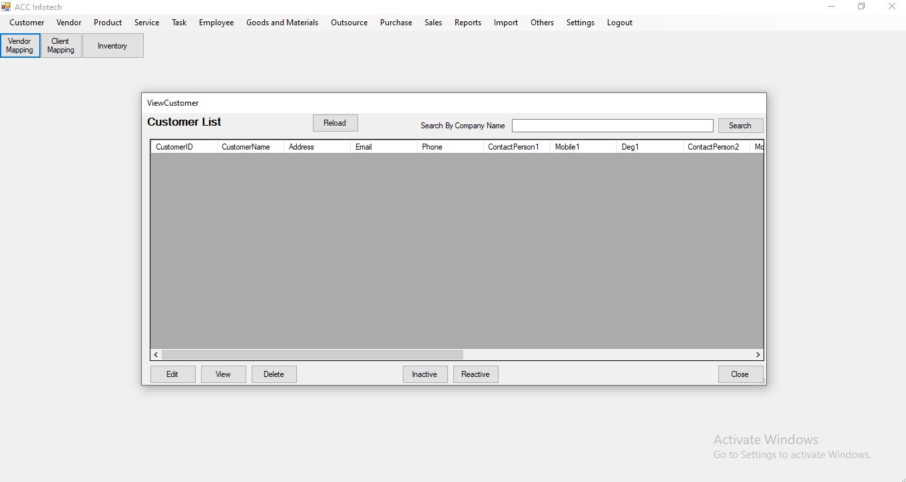
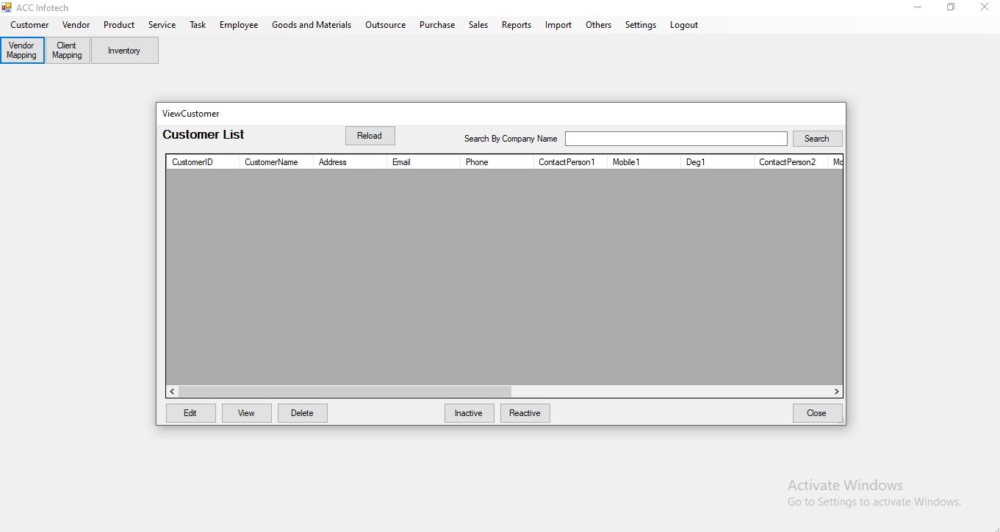

Inventory Management System
A desktop application built to help businesses manage stock levels, suppliers, purchase records, and generate real-time inventory analytics.
Features
- Product catalog with categories
- Supplier and purchase order management
- Stock-in and stock-out tracking
- Barcode support for faster operations
- Reports on stock levels and re-order alerts
Screenshots
 

Technologies Used
VB.NET, MS SQL Server, Windows Forms, Crystal Reports, File I/O, Excel Import and Export, SMTP
Challenges & Learnings
Faced challenges in syncing multiple users’ access to the database and maintaining data consistency. Learned database normalization, transaction handling, and better UX design for stock workflows.